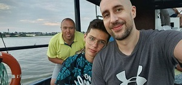
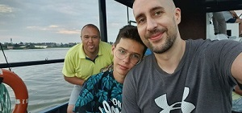

Адвокат он же Нудный он же Толстый он же Самыйсукаумный
Ну что я могу сказать про это человека. Это прекрасный, умный, красивый, веселый, замечательный, добрый, милый, очаровательный, скромный человек. В нашем мире нет ничего идеального, но если бы было, то скорее всего это был бы он.
Но именно этим он всех и бесит, всегда пытается избавить других от их заблуждений используя логику и научный метод познания и навязать им свои заблудения. Все время что-то читает, умничает. Хочется его треснуть. Очень фанатичен, часто впадет в крайности. Не пьет (о чем с ним еще говорить?). Не верит в Бога (ничего святого). Любит заниматься спортом, особенно поесть. Все время худеет и бросает курить. От природы очарователен, но очень не в меру зануден. Ходят слухи, что он настолько всех устал тем, что умничает, что ему сожгли машину (при этом даже пожарным он рассказывал, как надо правильно тушить его машину... ну вы поняли).
Характер вспыльчив. Чересчур самоуверен. Обладает подвешенным языком, может заболтать кого угодно. Хороший семьянин, но не подкаблучник (жена ему разрешила говорить всем, что он не подкаблучник).
Сильные стороны: Начитанный гад. Так просто его не провести. Неосторожно начав беседу, можно увязнуть в теоретизировании с его стороны. Знает немного, но о многом, а если не знает, то может на ходу придумать.
Слабые стороны: Хотите от него избавится, заинтересуйте его изучить что-нибудь и все, он пропал на пару недель… Или просто скажите ему, что он толстый.